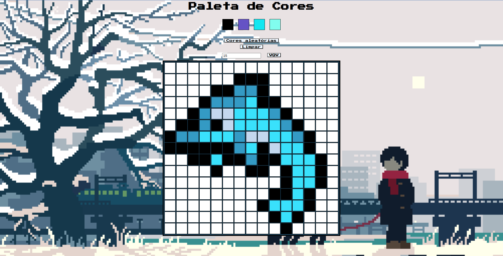

Desenvolvedor Web - Reinaldo Coelho
Moro em Brasília-DF, nasci em 1999 e atualmente sou formado em Licenciatura em Letras pela Universidade de Brasília. Após finalizar a graduação, retomei a minha meta de trabalhar com tecnologia. No momento, estou em transição de carreira e sou estudante de Desenvolvimento Web na escola de programação Trybe.
Competências
Projetos
-

HTML ♦ CSS ♦ JavaScript
DOM ♦ Local Storage ♦ Eventos